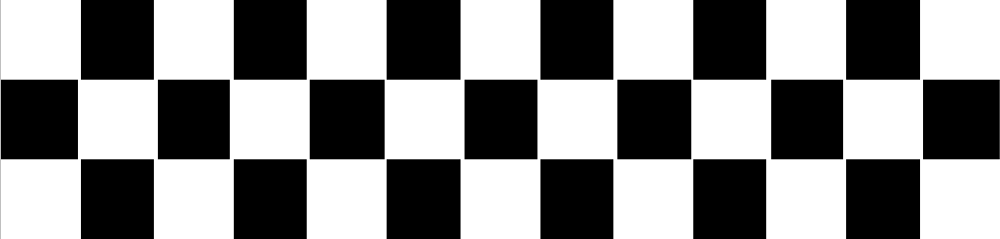

Jos Verstappen
De ouders van Max hebben veel invloed gehad op de jonge coureur Max Verstappen. Op de vraag welke acht mensen bepalend zijn geweest voor Max zijn loopbaan, zei vader Jos bij de Oostenrijkse GP: acht keer ik. Het was niet hooghartig bedoeld, en er is geen woord van gelogen. Duizenden manuren, vaderlijke liefde en het nodige kapitaal investeerde ‘Jos The Boss’na zijn eigen raceloopbaan in die van Max.
Jos heeft zelf ook een race carrière achter de rug. Zo domineerde hij in 1993 het Duits Formule 3 kampioenschap en werd zonder serieuze concurrentie kampioen. Jos koos ervoor om niet direct in te stappen in de Formule 1 maar in 1994 bij Benetton aan de bak te gaan als testcoureur. “Ik wou graag eerst wat ervaring op doen” vertelde Jos. Toch verliep dit anders dan verwacht toen Letho crashte en een nekwervel brak waardoor Jos zijn debuut in Maart 1994 maakte.
Na zijn Formule 1 carrière rijdt Jos nog een jaar in de nieuwe raceserie A1 Grand Prix voor Team Netherlands maar kon zijn laatste race niet rijden wegens een financieel dispuut en zo eindigde het voor Jos Verstappen.
Sophie Kumpen
Sophie Kumpen een succesvolle kart racer en de nicht van racer Anthony Kumpen is zelf ook een voormalig F1-piloot. Max heeft het talent van zijn vader, maar het karakter van z’n moeder. “En dat laatste is minstens net zo belangrijk, denk ik” verteld Sophie Kumpen.
De schoolopleiding van Max staat voorlopig on hold, vertelde zijn moeder, toen haar werd gevraagd of zijn puberteit niet aan hem voorbij gaat. “Hij kan het oppakken wanneer hij wil. Ik denk dat deze jaren hun eigen school vormen. Ik heb zelf in mijn periode als kartster vijf talen leren spreken en belangrijke levenslessen geleerd. Max doet op deze manier ook heel veel levenservaring op. Ik denk dat dat net zoveel waard is als een gewone scholing.”
“Max is het type jongen zoals ik mijn zoon later graag zou zien: welgemanierd, sociaal, genereus, aardig en ambitieus.” En professioneel, dat ook. “Ik hoef dingen nooit twee keer tegen Max te zeggen. Hij is ook niet het type dat denkt: ik weet het zelf wel. Hij heeft nog nooit tegen mij geschreeuwd. Max luistert en doet het gewoon. Is punctueel. Hij heeft de drang alles meteen perfect te willen doen en is enorm gefocust.”
Formule 3
Formule 1
Max Verstappen is de jongste coureur die we ooit hebben gezien in de F1. Met wat hulp van Red Bull Racing is hij de jongste F1 coureur, jongste ster die op het podium is geweest en de jongste om een race te winnen.
Lef
Max toont veel lef op het circuit. Dit uit zich vooral in zijn gedurfde inhaal manoeuvres. In 2015 liet hij dit al vaak zien, bijvoorbeeld op Spa Francorchamps waar hij aan de buitenkant van de bocht met 300km/u een andere coureur inhaalde. Ook op het circuit van Baku liet hij spectaculaire acties zien waar andere coureurs zich niet aan zouden wagen.
Snel en foutloos
Hij wordt door sommige nu al gezien als de Messi of Ronaldo van de autosport. Ondanks dat coureurs met zeer veel ervaring achter hem aan zaten, wist Max foutloos zijn eerste overwinning binnen te halen. Hij heeft dit voorheen al laten zien in het karten en de Formule 3. Naast het talent dat hij heeft is winnen, gezien zijn verleden, een gewoonte geworden. Dit helpt ook mee in hoe hij presteert op het circuit.
Nuchter
Buiten het circuit om blijft Max altijd heel nuchter onder alle druk, ondanks dat hij nu al de toekomstig wereldkampioen wordt genoemd. “Ik blijf gewoon mijn best doen op het circuit. Ik wil goede resultaten behalen en hopen dat ik in de toekomst een goede auto krijg, dat is altijd afwachten.” Aldus Max.
Formule 3
Ouders
De ouders van Max hebben veel invloed gehad op de jonge coureur Max Verstappen. Op de vraag welke acht mensen bepalend zijn geweest voor Max zijn loopbaan, zei vader Jos... Lees meer
Verder racen
Vorige
Volgende
Verder racen

Formule 3
Max Verstappen maakte zijn F3 debut in 2014. We hebben een aantal beelden op een rijtje gezet. Bekijk ze hier
Verder racen
Formule 1
Max Verstappen is de jongste coureur die we ooit hebben gezien in de F1. Met wat hulp van Red Bull Racing is hij de jongste F1 coureur, jongste ster die op het podium is geweest en de jongste om een race te winnen. Lees meer
Verder racen
